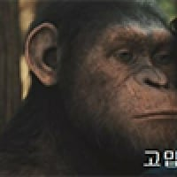

박지성이 교토 퍼플상가 갔을 때 받은 금액
댓글
리그는 아니고 일본 FA컵인 천황배 우승
저때 일본 소득이 상대적으로 더 높았을까
저 시절에 1인당 GDP가 일본이 한국의 3배였음. 지금은 한국이 역전했고.
이천수가 선배인줄 알았는데 검색해보니 동갑이네
나도 이천수가 나이 더 많은줄 알았는데 동갑이었네 ㄷㄷ
재능 그자체 박지성 ㅋㅋ
대학경기보고 허정무가 어? 쩌는데? 하며 올대 발탁
일본팀와서 보고 어? 쩌는데 영입
히딩크가 보고 어? 쩌는데 국대발탁 및 PSV영입
퍼거슨이 보고 어? 쩌는데 영입
ㅋㅋㅋㅋㅋㅋㅋ
하지만 K리그팀들만 못알아봤음
작은 우물속 개구리들은 비늘있는 커다란 벽으로만 봤지만 바깥에서는 용으로 본 케이스 ㄷㄷ
그때 왜소하고 특징은체력이라 그랫을듯
못알아본건 아니고...
케이리그 드래프트 신청도 안했을걸
대학선수하다 고액 연봉으로 교토감 ㅋㅋ
아마 그때 받은 돈이 케리그 탑텐안에 들어갈거임
잡고 싶어도 못잡는 그런 존재였음
당연히 J2로 강등됐을때도 J2가 J1보다 경기일정이 더 많아서 많이 뛰니까 좋았다고
빅지성 국대 뛸때는 그래도 박지성이 뭔가 보여주겠지 하는 믿음이 항상 있었는데
빅지성? 오타겠지만 느낌있는데? ㅎㅎ

유럽 남미 이기긴 힘들지 몰라도 지진 않는다 뭐라도 할수있다 라는 믿음
처음에 교토 상가 간다고 해서
상인연합 조기 축구회 같은걸로 생각했는데
지금까지 교토상가가 교토 상점가 라는 뜻인줄..
그게 아니었어???
Sanga 라고 쓰는거 보고 찾아보니까 걍 club같이 연합이라는 뜻이래
박지성은 행동 하나 하나가 쌓여서 노력형인줄 알지만 그냥 천재가 겸손하신거ㅋㅋㅋㅋㅋ 지금도 psv 맨유 패스짤보면 시원한 역습하고 미친듯이 물어뜯는 수비 선수가 잘 안보여
영원한 캡틴박
저래서 월드컵 끝나고 누가 유럽 진출하는데 연봉도 연봉이지만 경기 뛸 수 있는 곳으로 가라는 거였구나
솔직히 천재+개노력가인데 유해진 닮은 얼굴 덕에 퓨어 노력형으로 보이는 해버지...
일본 수도는 교토가 맞다
그리고 귀신같이 우승시킨 미친능력자